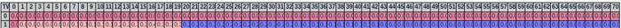
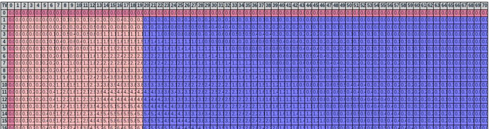
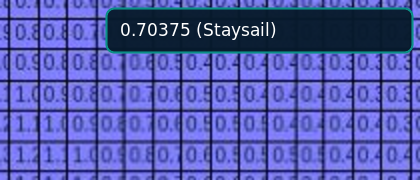
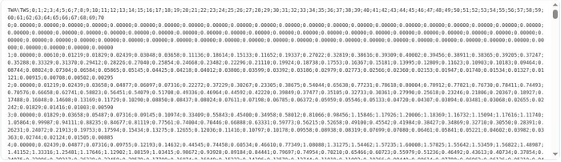

Polar Generator
Output Area
The Axis
In the raw polar data, two vectors (one-dimensional arrays) define the graduations for both axes:
{
…
"tws" : [0, 4, 6, 8, 10, 12, 14, 16, 18, 20, 22, 24, 26, 28, 30, 40, 50, 70],
"twa" : [0, 30, 33, 36, 39, 42, 45, 50, 55, 60, 65, 70, 75, 80, 85, 90, 95, 100, 105, 110, 115, 120, 125, 130, 135, 140, 145, 150, 155, 160, 180],
…
}
These values will be taken as-is into the array generated:

However, if Interpolate missing values is checked, the axes use values every 1° (TWA) and every 1 kt (TWS).
The Colors
In the array display, each cell is colored according to the best sail used to reach that speed.
The colors match those used on the Chart and in the
Sails panel.
Here is how a Full Pack on a Super Maxi 100 looks:

- Jib
- Light Jib
- Staysail
- Code 0
- Spi
- Light Gennaker
- Heavy Gennaker

Hover a cell to display its exact value and sail name.
Raw Output

The raw output field lets you inspect the exact content generated for the selected target application.
If you trust the generator, then you can forget about the Toggle Array button.
Save to File
Once the output satisfies your needs, use Copy to Clipboard, paste it into a plain-text editor and save it without rich-text formatting. Do not use Microsoft Word™ or another word processor.
Suitable editors include Visual Studio Code, Sublime Text, Notepad++, Notepad, or TextEdit configured for plain text.
Use the extension expected by the selected target: .csv for QtVlm/OpenCPN/Avalon/Dorado,
.pol for Squid/SimSail or Adrena/SailGrib, and .xml for MaxSea.